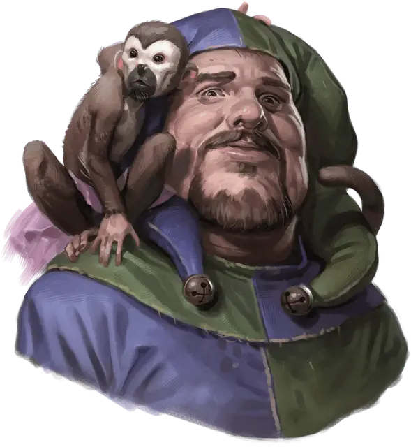

Гадоф Блинский
Gadof Blinsky
Средний Гуманоид (Любая раса), хаотично-добрый, именной НИП

Класс Доспеха 10
Хиты 4 (1к8)
Скорость 30 футов
| мод | спас | ||
|---|---|---|---|
| СИЛ | 10 | +0 | +0 |
| ЛОВ | 10 | +0 | +0 |
| ТЕЛ | 10 | +0 | +0 |
| мод | спас | ||
|---|---|---|---|
| ИНТ | 10 | +0 | +0 |
| МДР | 10 | +0 | +0 |
| ХАР | 10 | +0 | +0 |
Чувства пассивное Восприятие 10
Языки Общий
Опасность 0
Бонус мастерства +2
Действия
Дубина. Рукопашная атака оружием: +2 к попаданию, досягаемость 5 футов, одна цель. Попадание: 2 (1к4) дробящего урона.
Описание
Игрушечных дел мастер Валлаки, Гадоф Блинский, называет себя «волшебником крохотных чудес», но с недавних пор его поглотило отчаяние, из-за того, что, кажется, ни он, ни его игрушки никому не нужны. Его восхищение пугающими игрушками привело к тому, что большинство местных его избегают. Бургомистр поддерживает бизнес Блинского, давая ему немного золота ежемесячно, за подготовку декораций для фестиваля.
Блинский выглядит как грузный человек в побитом молью шутовском колпаке, который носит во время работы магазина. Делает он это скорее по привычке, нежели для веселья посетителей. За прошлые шесть месяцев, лишь один посетитель, зашедший в его магазин купил что-то. Это был путешественник из далёких земель по имени Риктавио (см. область N2), который две недели назад приобрёл набитую куклу-вистани. Понимая, что игрушечных дел мастеру очень одиноко, Риктавио отдал ему свою ручную обезьянку, Пикколо [Piccolo]. Обрадованный Блинский начал тренировать обезьяну подавать игрушки с труднодоступных полок. Игрушечных дел мастер к тому же нарядил Пикколо в специально пошитую балетную пачку.
Когда он встречает новых посетителей, Блинский выдаёт хорошо отрепетированное приветствие: «Добро пожаловать, друзья, в Дом Блинского, где счастье и улыбки можно приобрести по сходной цене. Возможно вы знаете ребёнка, которому нужны развлечения? Маленькая игрушка для мальчика или девочки?»